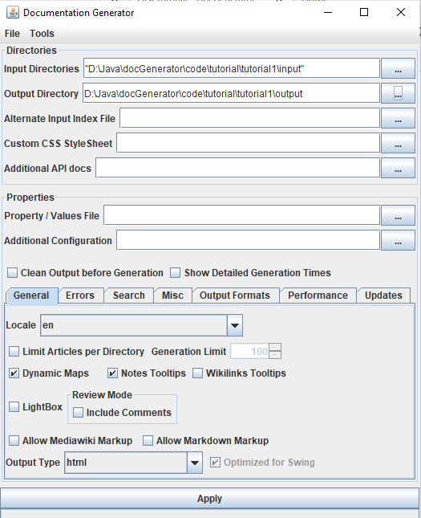
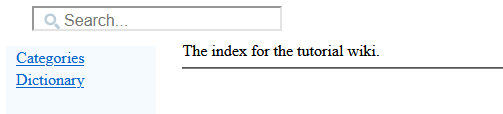
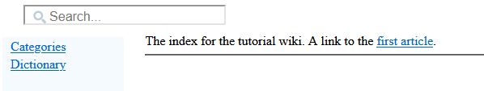
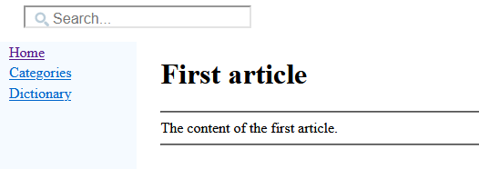
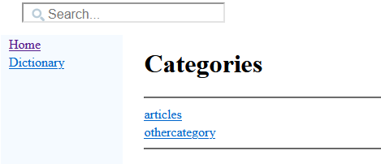
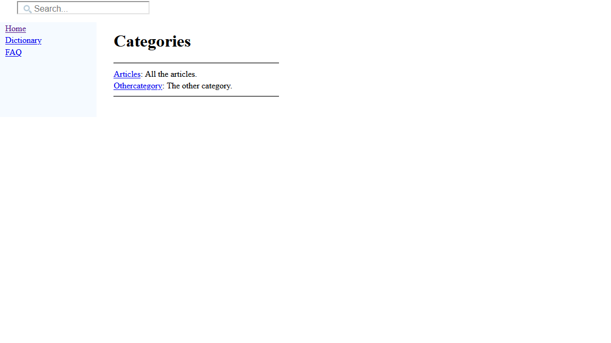
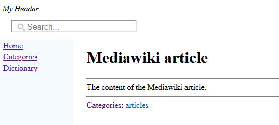
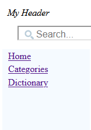
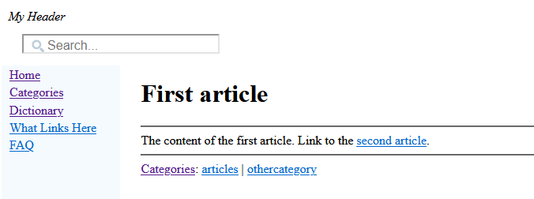
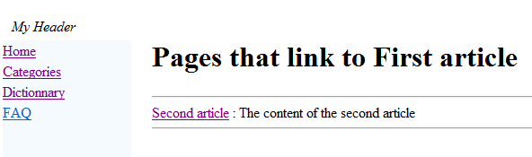

Home
Categories
Dictionary
Download
Project Details
Changes Log
What Links Here
How To
Syntax
FAQ
License
First tutorial
1 Create an index article
2 Create our first article
3 Create a second article
4 Create a header and footer
5 Create a categories list
6 Add an article with a Mediawiki markup
7 Customize the left menu
7.1 Create the FAQ article
7.2 Modify the first and second articles
7.3 Customize the left menu
8 Notes
9 See also
2 Create our first article
3 Create a second article
4 Create a header and footer
5 Create a categories list
6 Add an article with a Mediawiki markup
7 Customize the left menu
7.1 Create the FAQ article
7.2 Modify the first and second articles
7.3 Customize the left menu
8 Notes
9 See also
This article is a tutorial to create your first wiki.
You will:
Remind that the structure of this directory (it's sub-directories) is meaningless for the generator (but of course it can be useful for you to find your articles).
Now you will create only an index article. Remind that you can have only one index in your directory. Lets create an XML file namedindex.xml. The name of the file itself has no importance, but it will be easier to name it like that to find it easily. Let's write our first article:
Let's generate our wiki. Double-click on the jar file of the application and:
If you open the index.html file in the result directory, you should see something like that in your navigator:
Of course the categories and dictionary are empty because no category is defined and no articles besides the index have been created.
Let's regenerate the wiki. Now the index looks like that:
And if we click on the link, we go to the article:
The articles dictionary has also be generated, if we click on the Dictionary link, we have a link for our first article.
We want to add to the left menu:
The XML file for the left menu will be:
Let's go to our first article and click on the What Links Here hyperlink: we see the list of articles which link to the first article (in our case, our list only contains the second article):
You will:
- Create an index article
- Create our first article
- Create a second article
- Create a header and footer
- Create a categories list
- Add an article with a Mediawiki Markup
- Customize the left menu
Create an index article
Choose an empty directory to put your articles, and another to put the result of the wiki generation.Remind that the structure of this directory (it's sub-directories) is meaningless for the generator (but of course it can be useful for you to find your articles).
Now you will create only an index article. Remind that you can have only one index in your directory. Lets create an XML file namedindex.xml. The name of the file itself has no importance, but it will be easier to name it like that to find it easily. Let's write our first article:
<index> The index for the tutorial wiki. </index>The fact that the top element is an
index is enough to specify that this article is our index. In all articles, the "Home" link will get us back to this article.Let's generate our wiki. Double-click on the jar file of the application and:
- Input directories: Set your directory (with only the index.xml file for the moment)
- Output directory: Set the other empty directory for the HTML wiki result
- Click on "Apply"

If you open the index.html file in the result directory, you should see something like that in your navigator:

Of course the categories and dictionary are empty because no category is defined and no articles besides the index have been created.
Create our first article
Now we will create a first article. Let's do it (the name of the XML file has no importance):<article desc="first article"> The content of the first article. </article>We will also add an internal wikilink to this article in our index file:
<index> The index for the tutorial wiki. A link to the <ref id="first article" />. </index>
Let's regenerate the wiki. Now the index looks like that:

And if we click on the link, we go to the article:

The articles dictionary has also be generated, if we click on the Dictionary link, we have a link for our first article.
Create a second article
Let's create a second article. This time we will define a category for this article.<article desc="second article"> The content of the second article. <cat id="articles"/> </article>Let's also set the categories for the first article, for example:
<article desc="first article"> The content of the first article. <cat id="articles"/> <cat id="othercategory"/> </article>Now two categories appear on the Categories link, each contain Category its articles:

Create a header and footer
We will create footer and header files for all our HTML pages. For the header:<header desc="My Header"/>For the footer:
<footer desc="docJGenerator Tutorial"/>Each of them must be on a different XML file.
Create a categories list
The categories names do not contain any meaningless description. Creating a categories list is just a way to add these descriptions. Let's create a new file for our categories descriptions:<categories> <category id="articles" desc="All the articles" /> <category id="othercategory" desc="The other category" /> </categories>Now our categories have a description:

Add an article with a Mediawiki markup
We will add an article with a Mediawiki Markup. Create a new file with the extension "md":{{name:Mediawiki article}} The content of the Mediawiki article. [[Category:articles]]To allow Mediawiki Markup, you should now select the "Allow Mediawiki Markup" checkbox before the generation. The generation of this article will create the following html file[1]
You can navigate to the article by the dictionary, or by typing "mediawiki" in the Search box
:
Customize the left menu
By default the left menu only shows for each article:- A link to the Home page of the wiki (the index)
- A link to the Categories page
- A link to the Dictionary page

We want to add to the left menu:
- A link to a What links here item which will give access for each article to a page showing all the articles which link to the current article
- A link to a FAQ article
- We will create the FAQ article
- We will add the link to our "What links here"
Create the FAQ article
The FAQ article will have the following content. As for all articles, the file can have any name you want.<article desc="FAQ" > <meta desc="Frequently Asked Questions" /> This is a FAQ for the tutorial, without any questions. </article>You can remark here that we added at the start of the FAQ a meta element: it allows to show the text of this meta in the Dictionary or the Categories along-side the name of the article itself. Here it is better for example to see the text Frequently Asked Questions than This is a FAQ for the tutorial, without any questions for the FAQ[2]
If an article don't have
.
meta element, the text will be the first sentence the tool detects for this articleModify the first and second articles
We will also modify our first and second articles to add internal wiki links from one article to the other. We already saw how to add references, so there is nothing new here. We will have for the first article:<article desc="first article"> The content of the first article. Link to the <ref id="second article" />. <cat id="articles"/> <cat id="othercategory"/> </article>And for the second article:
<article desc="second article"> The content of the second article. Link to the <ref id="first article" />. <cat id="articles"/> </article>
Customize the left menu
We will add an XML file with theleftMenu root to customize what will appear in the left menu. In addition to the Categories and the Dictionary, we want to have:- A link to a The What links here item which will give access for each article to a page showing all the articles which link to the current article
- A link to our new FAQ article
The XML file for the left menu will be:
<leftMenu onIndex="true"> <menuItem desc="What Links Here" > <linksFromRef /> </menuItem> <menuItem desc="FAQ" > <itemInternalRef id="FAQ" /> </menuItem> </leftMenu>Now the left menu has changed:

Let's go to our first article and click on the What Links Here hyperlink: we see the list of articles which link to the first article (in our case, our list only contains the second article):

Notes
See also
- Second tutorial: This article is a tutorial which explains the concepts of imagas and resources
×

Categories: Tutorials